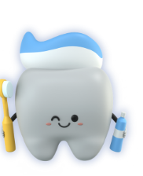

Checkups & diagnosis
Oral examination, dental concern review, and clear treatment planning.
Opening soon on Hospital Road, Sundargarh
Care Plus Dental Clinic is led by Dr. Shrutimayee Patel, B.D.S., Dental Surgeon, bringing comprehensive family dental care to Sundargarh.

Services
From routine checkups to restorative treatment, the clinic is planned around practical, patient-friendly dental care for adults and children.
Oral examination, dental concern review, and clear treatment planning.
Professional cleaning support for healthier gums and fresher breath.
Care for cavities and damaged teeth with a focus on preserving tooth structure.
Treatment planning for infected or painful teeth that may be saved.
Support for crown cutting, FPD planning, impressions, and replacement options.
Careful assessment and tooth removal when extraction is the right option.
A calm, friendly approach for children and first-time dental visits.
Simple oral hygiene advice to help patients protect their smiles at home.
Meet the dentist
Dental Surgeon, Odisha Dental Council Regd. No. 2961-A
Dr. Patel completed her Bachelor of Dental Surgery from Triveni Institute of Dental Sciences, Hospital and Research Centre, Bilaspur, and has clinical experience from Smile Dental Clinic, Belpahar.
Her practice focus includes diagnosis, treatment planning, restorations, scaling, RCT, crowns, extractions, impressions, and pediatric patient care.
Clinic experience
Care Plus Dental Clinic is being prepared as a local, accessible clinic where patients can receive careful examination, treatment planning, and follow-up support.
Dental concerns and treatment options are discussed in simple language.
The clinic is planned with appropriate biomedical waste handling procedures.
Located near ICICI Bank on Hospital Road for easy landmark-based navigation.
Location & hours
Appointments
Send a quick enquiry and the clinic can confirm availability once appointments open.